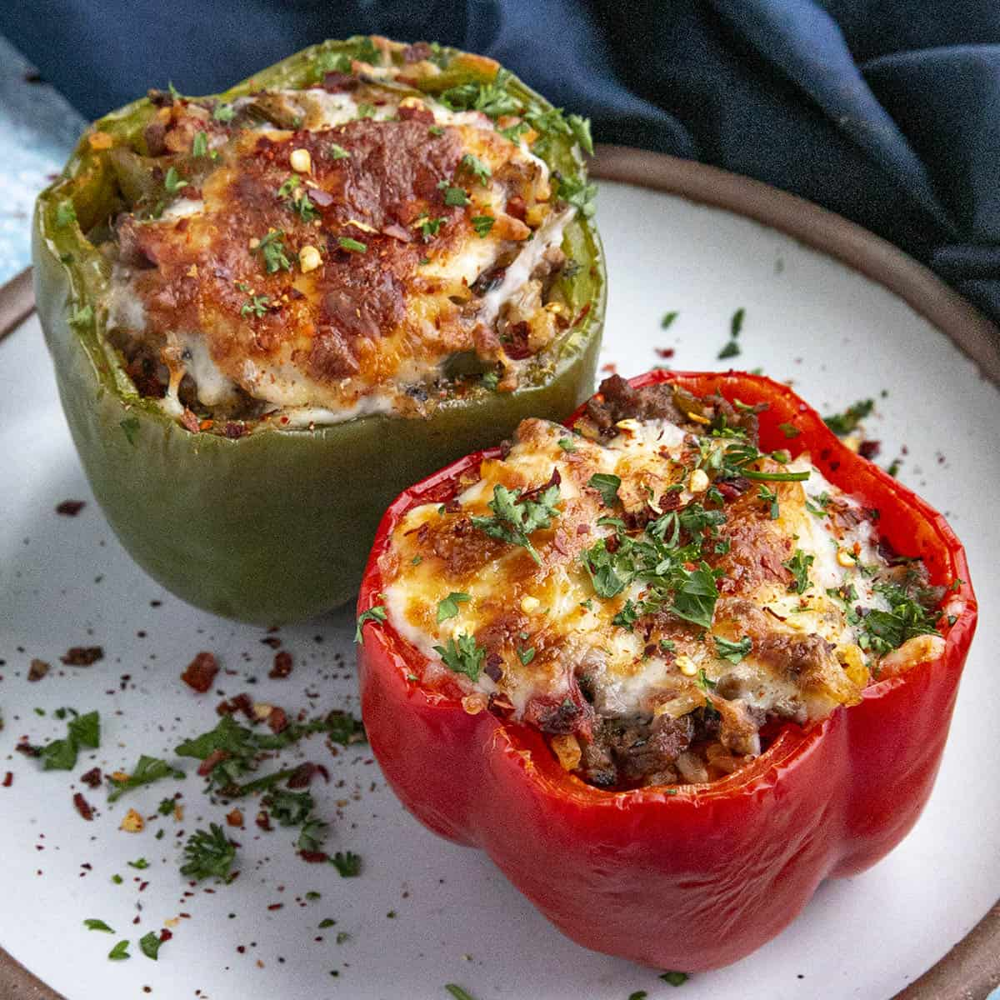

Stuffed Peppers

Description
Do you love stuffed peppers? Stuffed bell peppers
are the perfect easy-to-make dinner that can be
made inexpensively, and are always a crowd pleaser.
They're such a nutritional powerhouse, ready for
your endless creativity, and they're always on the
menu in the Chili Pepper Madness kitchen.
The thick, succulent flesh and hollow insides of the
peppers make them the ideal vessels for stuffing
and baking with all manner of foods, from ground
meats, cheeses, grains, spices, even leftovers.
Ingredients
- Bell Peppers (Any Color)
- Olive Oil
- Ground Meat
- Onion
- Jalapeno
- Garlic
- Fire Roasted Tomatoes (Canned)
- Shredded Cheese
- Paprika
- Oregano
- Basil
- Salt
- Pepper
- Cooked Rice
- Fresh Chopped Parsley
- Red Pepper Flakes
Steps
- Blanch the bell peppers for 5 minutes to
slightly soften.
- Set the soften peppers into a lightly oiled
baking dish.
- Heat the oil in a large pan to medium heat
and add the onions, chopped pepper tops, and
jalapeno. Cook for 5 minutes to soften.
- Add the garlic and cook 1 minute, or until
the garlic becomes fragrant.
- Add the ground meat and cook for 5-6 minutes,
breaking apart as you go, until cooked through.
- Add the fire roasted tomatoes, seasonings, and
cooked rice mixture. Stir together and remove
heat.
- Stir in 1/2 cup of the shredded cheese until
incorportated. You can add in a bit more if
you'd like it more cheesy.
- Stuff each pepper with the meat filling mixture,
then top each with the remaining shredded
cheese.
- Roast the stuffed peppers for 15-20 minutes,
or until the peppers are tender to your
preference, and the cheese is nice and bubbly.
So good topped with cheese! this is a pretty
forgiving recipe, so you can usually bake them
longer if you want the peppers extra softened
up.
- Cool slightly, garnish, and serve.